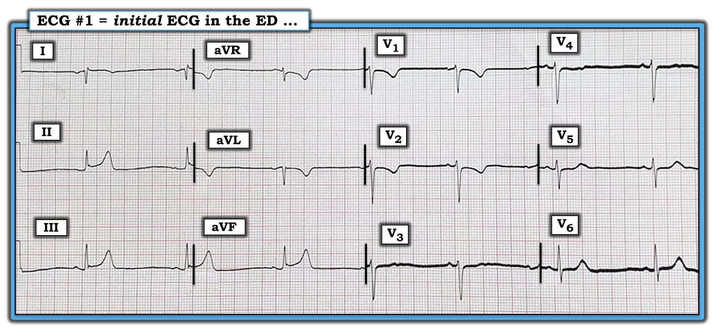
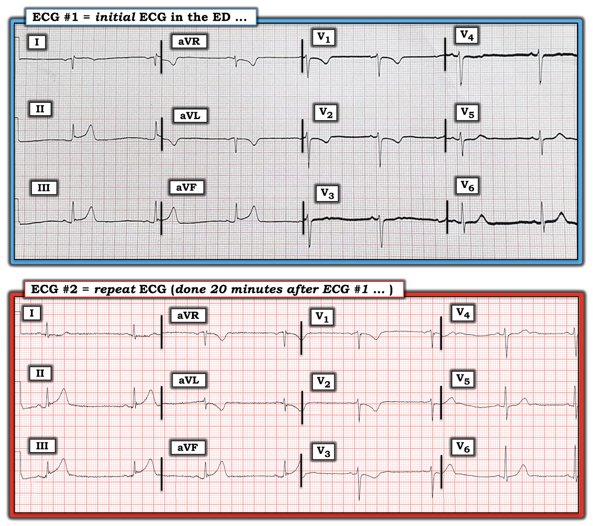
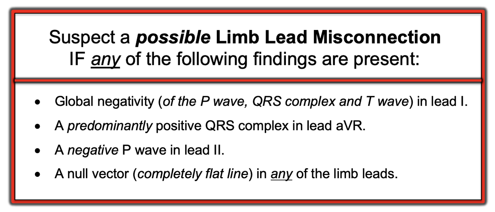
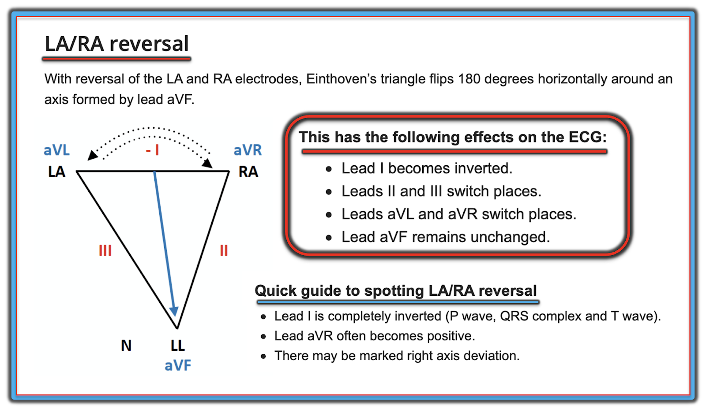
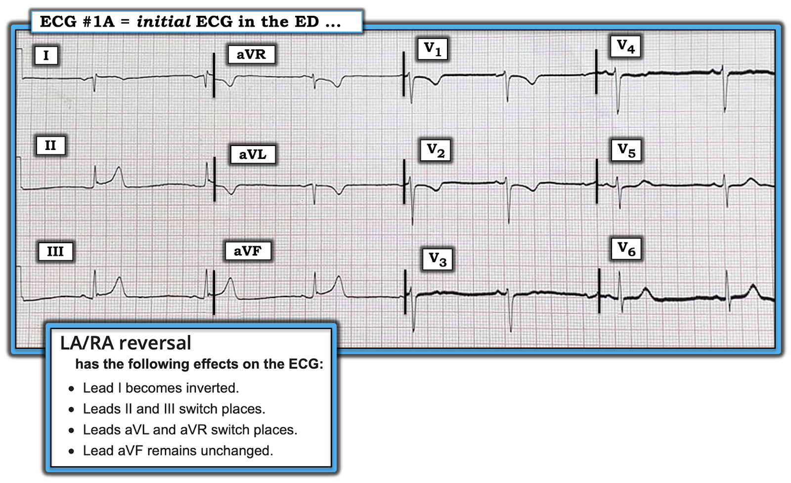
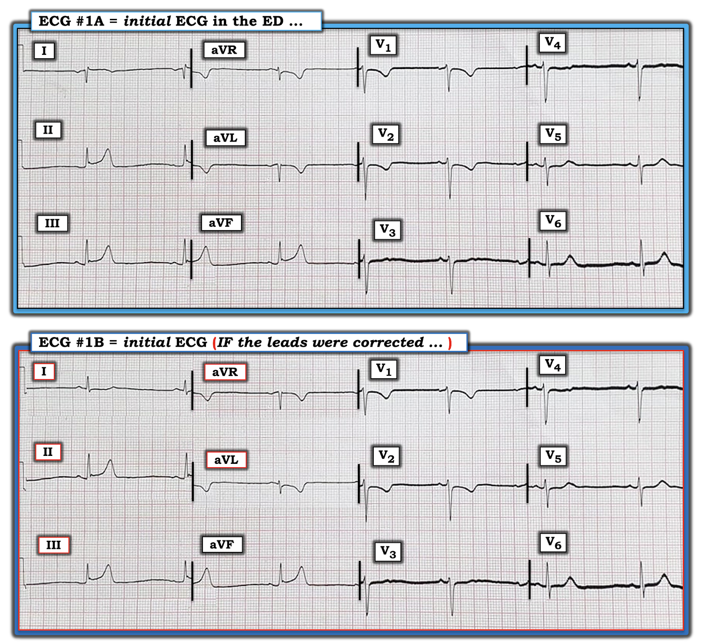
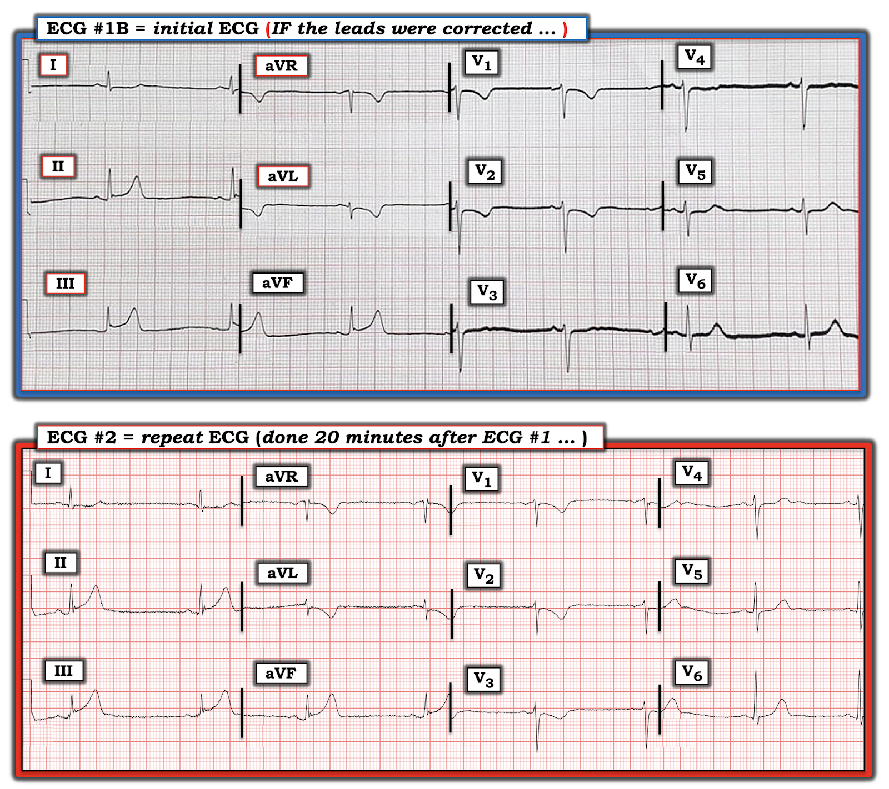
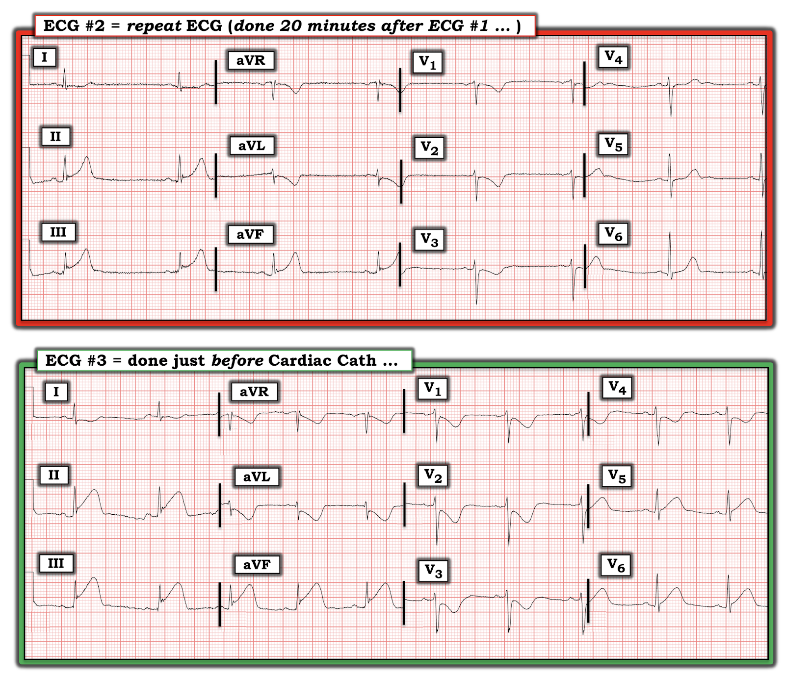
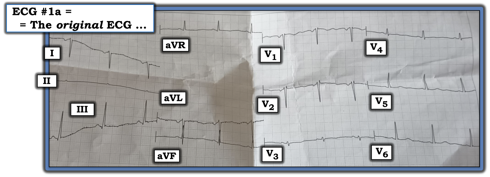
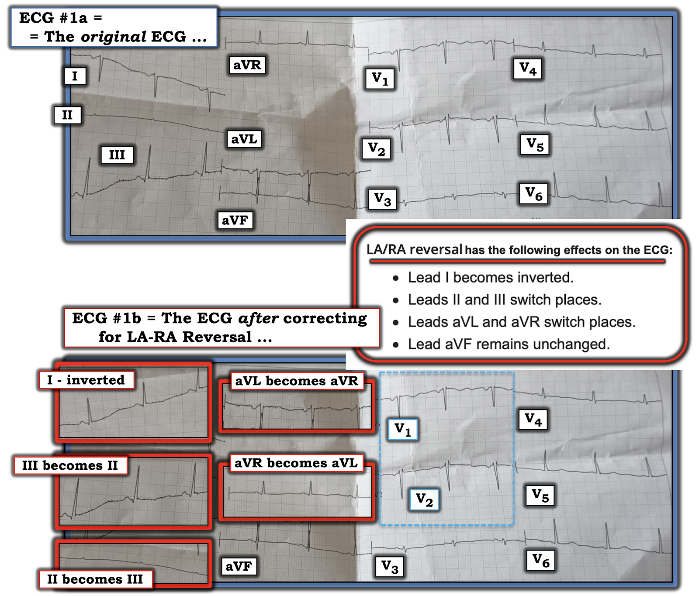

ECG Blog #264 — 2 dấu hiệu chính?
Điện tâm đồ ở Hình-1 được ghi ở một người đàn ông khoảng 60 tuổi đến khoa cấp cứu – ED (Emergency Department) vì đau ngực.
- Bạn sẽ diễn giải bản ghi này như thế nào?
- 2 dấu hiệu điện tâm đồ chính là gì?
- Điểm cộng: Nhịp là gì?


Ca bệnh tiếp diễn:
Hai mươi phút sau — một điện tâm đồ ghi lại đã được thực hiện ở bệnh nhân đau ngực này (Hình-2).
- Những khác biệt giữa 2 bản ghi này là gì (tức là giữa điện tâm đồ #1 và điện tâm đồ #2 ở Hình-2)?
- Điểm cộng: Đã có tiến triển chưa?


=======================================
LƯU Ý: Đến đây, một số độc giả có thể muốn nghe ECG Audio PEARL dài 5:45 phút trước khi đọc Suy nghĩ của tôi về 2 điện tâm đồ đầu tiên trong ca hôm nay. Bạn có thể tham khảo Suy nghĩ của tôi về các bản ghi này bất cứ lúc nào (nằm bên dưới ECG MP-72).
=======================================



Hôm nay: ECG Media PEARL #72 (5:45 phút Audio) — Ôn lại cách nghi ngờ Đảo điện cực chi (đặc biệt là đảo điện cực LA-RA).
ĐIỂM THEN CHỐT (PEARL) #1 = Ấn tượng đầu tiên của tôi về điện tâm đồ #1 ...
Có âm toàn bộ (global negativity — của sóng P, phức bộ QRS và sóng T) ở chuyển đạo I. Điều này hầu như không bao giờ gặp trong trường hợp bình thường — và phải ngay lập tức gợi ý một trong hai: i) Đảo điện cực LA-RA (Left Arm-Right Arm — tay trái-tay phải); hoặc, ii) Tim sang phải – dextrocardia (Được bàn chi tiết trong Audio Pearl ở trên).
- Chuyển đạo I chuẩn là một chuyển đạo phía bên trái. Vì tim nằm lệch về bên trái — hoạt động điện ưu thế hầu như luôn hướng về bên trái. Ngay cả khi có nhồi máu vùng bên diện rộng — cũng hiếm khi thấy sóng Q ưu thế ở chuyển đạo I.
- Không chỉ là sóng Q ưu thế ở chuyển đạo I của điện tâm đồ #1 — mà còn là việc cả sóng P lẫn sóng T ở chuyển đạo này đều âm (tức là có âm toàn bộ của sóng P, QRS và sóng T ở chuyển đạo I).
- Ngược lại — sóng P ở điện tâm đồ #1 lại dương ở chuyển đạo aVR (trong khi với nhịp xoang, sóng P sẽ âm ở chuyển đạo aVR).
- Ở Hình-1 — nguyên nhân gây âm toàn bộ sóng P, QRS và sóng T ở chuyển đạo I không phải là tim sang phải — vì sóng R đáng kể có xuất hiện ở chuyển đạo ngực bên V6 (trong khi với tim sang phải — phải có tăng tiến sóng R "đảo ngược", tức là không có sóng R đáng kể ở khắp các chuyển đạo ngực). Vì vậy — tôi nghi ngờ mạnh mẽ đảo điện cực LA-RA.
- ĐIỂM CHÍNH: Có thể có sóng T tối cấp – hyperacute (kèm ST chênh lên nhẹ) ở các chuyển đạo dưới của điện tâm đồ #1 — cùng với một vài thay đổi soi gương (reciprocal) có thể có. Với bệnh sử đau ngực — điện tâm đồ này cần được ghi lại ngay lập tức để làm rõ chuyện gì đang xảy ra. Tôi nghi ngờ một OMI cấp (Occlusion-based Myocardial Infarction — nhồi máu cơ tim do tắc) — nhưng do có khả năng có lỗi kỹ thuật (đảo điện cực LA-RA) — nên rất khó đánh giá chính xác tình hình khi xem điện tâm đồ #1.
SUY NGHĨ CỦA TÔI về các điện tâm đồ ở Hình-2:
Để trả lời câu hỏi tôi đặt ra ở đầu ca này — 2 dấu hiệu điện tâm đồ chính ở Hình-1 là: i) Nhiều khả năng đảo điện cực LA-RA; và, ii) OMI thành dưới cấp cho đến khi chứng minh được điều ngược lại (cần có một bản ghi đúng kỹ thuật để đánh giá chính xác các dấu hiệu điện tâm đồ).
- So với điện tâm đồ #1 — điện tâm đồ #2 ở Hình-2 có vẻ đúng kỹ thuật vì: i) Sóng P, phức bộ QRS và sóng T ở chuyển đạo I giờ đều dương; ii) Âm toàn bộ (của sóng P, phức bộ QRS và sóng T) giờ thấy ở chuyển đạo aVR, đúng như mong đợi khi điện cực được đặt bình thường; và, iii) Giờ đã thấy một sóng P xoang dương, bình thường ở chuyển đạo II (trong khi không thấy sóng P dương nào ở điện tâm đồ #1).
- Về Câu hỏi Điểm cộng tôi đặt ra trước đó — nhiều khả năng cơ chế của nhịp ở điện tâm đồ #1 là xoang — và lý do chúng ta không thấy sóng P dương ở chuyển đạo II là do đảo điện cực LA-RA. Tôi đưa ra bằng chứng ủng hộ giả thuyết này ở bên dưới (ở Hình-5, trong đó tôi cho thấy điện tâm đồ #1 lẽ-ra-phải-trông-như-thế-nào NẾU tất cả các điện cực chi được đặt đúng).
DIỄN GIẢI CỦA TÔI về điện tâm đồ #2:
Giờ chúng ta đã xác nhận điện tâm đồ #2 (ở Hình-2) đúng kỹ thuật — tôi diễn giải bản ghi này trong bối cảnh bệnh sử là bệnh nhân đến khoa cấp cứu vì đau ngực mới xuất hiện. Như mọi khi — tôi ưu tiên dùng Cách tiếp cận hệ thống (mà tôi ôn lại trong ECG Blog #205).
- Tần số & Nhịp: Mặc dù không có dải nhịp dài — chúng ta vẫn thấy tần số chậm và hơi không đều. Có sóng P dương ở chuyển đạo II — và khoảng PR ở mọi chuyển đạo không đổi — nên nhịp ở Hình-2 là nhịp chậm xoang kèm loạn nhịp xoang.
- Các khoảng (PR/QRS/QTc): Khoảng PR bình thường — phức bộ QRS hẹp — và QTc không kéo dài — nên mọi khoảng đều bình thường.
- Trục: Trục QRS mặt phẳng trán bình thường (tôi ước tính khoảng +60 độ — do dương nhất ở chuyển đạo chuẩn II — và phức bộ QRS đẳng điện ở chuyển đạo aVL).
- Lớn các buồng tim: Không có. Nếu có gì đáng nói thì — biên độ QRS giảm ở khắp các chuyển đạo, dù chưa hẳn đạt tiêu chuẩn điện thế thấp (vì một vài chuyển đạo chi có biên độ vượt quá 5 mm).
Về Thay đổi Q-R-S-T ở điện tâm đồ #2:
- Sóng Q — Thấy các sóng q vách bình thường, rất nhỏ và hẹp ở chuyển đạo I và V6.
- Tăng tiến sóng R — Vùng chuyển tiếp (nơi sóng R trở nên cao hơn độ sâu của sóng S) hơi muộn, nằm giữa chuyển đạo V4 và V5.
- Thay đổi ST-T — Xét bệnh cảnh của bệnh nhân này (tức là đau ngực là lý do chính đến khoa cấp cứu) — tôi sẽ diễn giải sóng T ở mỗi chuyển đạo dưới là tối cấp (hyperacute), vì các sóng T này cao hơn mong đợi nhiều (tức là cao hơn cả sóng R ở chuyển đạo III và aVF!) — đồng thời béo-hơn-ở-đỉnh và rộng-hơn-ở-đáy so với mong đợi dựa trên biên độ sóng R ở các chuyển đạo này. Cũng có ít nhất 1 mm ST chênh lên ở mỗi chuyển đạo dưới (rõ nhất ở chuyển đạo III).
- Bằng chứng cho thấy các thay đổi ở chuyển đạo dưới này là cấp tính đến từ sóng ST-T đảo ngược soi gương ở chuyển đạo aVL, và ở các chuyển đạo trước V1, V2, V3.
- ĐIỂM THEN CHỐT #2: Nếu xét riêng — sóng T ở chuyển đạo V6 có thể không hẳn có vẻ bất thường — nhưng trong bối cảnh các sóng T tối cấp rõ ràng ở các chuyển đạo dưới — và "thể tích" sóng T tăng dần từ chuyển đạo V4 — đến V5 — đến V6 — thì sóng T ở chuyển đạo V6 béo-hơn-ở-đỉnh và rộng-hơn-ở-đáy so với bình thường.
Nhận định về điện tâm đồ #2:
Ở một bệnh nhân đau ngực mới khởi phát — điện tâm đồ này gợi ý STEMI dưới-sau-bên đang tiến triển cấp. Cần kích hoạt phòng thông tim (cath lab) ngay để tái tưới máu cấp.
- ĐIỂM THEN CHỐT #3: Hãy chú ý mối quan hệ soi gương ngược chiều "kỳ diệu" của sóng ST-T giữa chuyển đạo III và aVL ở điện tâm đồ #2 (Khái niệm này được bàn chi tiết trong ECG Blog #184). Dù tinh tế — có ST chênh xuống tại điểm J ở chuyển đạo aVL, là hình soi gương của ST chênh lên ở chuyển đạo III. Mối quan hệ này xác nhận OMI thành dưới cấp đang diễn ra.
- ĐIỂM THEN CHỐT #4: Đánh giá sóng ST-T ở điện tâm đồ #2 minh họa tuyệt vời cho khái niệm tính tương xứng (proportionality). Dù biên độ sóng T đảo ngược ở chuyển đạo aVL chỉ 3 mm — biên độ sóng T này gấp đôi sóng R nhỏ xíu ở chuyển đạo này! Tương tự — chúng ta biết sóng T ở mỗi chuyển đạo dưới là tối cấp, vì chúng cao không tương xứng so với sóng R ở các chuyển đạo này.
Đảo điện cực LA-RA: Điện tâm đồ #1 lẽ ra phải trông như thế nào?
Tài liệu “Tra Cứu-Nhanh” trực tuyến yêu thích của tôi về các kiểu đặt sai vị trí điện cực thường gặp nhất là của LITFL ( = Life-In-The-Fast-Lane). Tôi đã dùng trang web tuyệt vời mà họ đăng về chủ đề này trong nhiều năm. Trang này DỄ tìm — Chỉ cần gõ “LITFL Lead Reversal” vào thanh Tìm kiếm — và đường link sẽ hiện ra ngay.
- Trang LITFL này mô tả 7 kiểu đảo điện cực thường gặp nhất. Còn có những khả năng khác (tức là có thể đặt sai vị trí nhiều điện cực) — nhưng các trường hợp này ít gặp hơn và khó dự đoán hơn.
- Cho đến nay (!) — kiểu đảo điện cực thường gặp nhất là nhầm lẫn giữa các điện cực LA (Left Arm — tay trái) và RA (Right Arm — tay phải). Đây chính là sự nhầm lẫn đã xảy ra trong ca hôm nay. Để rõ ràng — tôi đã tái hiện hình minh họa của LITFL về đảo điện cực LA-RA ở Hình-3.


Cách tiếp cận CỦA TÔI để Nhận biết Đặt sai vị trí Điện cực — Điều đã giúp tôi qua nhiều năm nhận ra nhanh chóng phần lớn các trường hợp đặt sai vị trí điện cực là chú ý đến các thông số sau:
- Chuyển đạo I — thường có phức bộ QRS dương ưu thế, vì chuyển đạo phía bên trái này bình thường nhìn thấy hoạt động điện của tim đi về phía chuyển đạo I. Tất nhiên có thể có trục lệch phải — nhưng bạn hầu như sẽ không bao giờ thấy một phức bộ hoàn toàn âm (tức là QS) ở chuyển đạo I trừ khi có: i) đảo điện cực; hoặc ii) tim sang phải.
- Cũng cực kỳ hiếm khi có một sóng Q rất sâu và rộng ở chuyển đạo I. Tất nhiên có ngoại lệ (tức là nhồi máu cơ tim vùng bên diện rộng) — nhưng tôi luôn cân nhắc khả năng đặt sai vị trí điện cực mỗi khi có một sóng lệch âm ban đầu chiếm ưu thế (tức là một sóng Q lớn và rộng) ở Chuyển đạo I.
- NẾU có “âm toàn bộ” (tức là sóng P, phức bộ QRS và sóng T đều âm) ở chuyển đạo I — thì chẩn đoán hoặc đảo điện cực hoặc tim sang phải gần như chắc chắn!
- Chuyển đạo aVR — thường có phức bộ QRS âm ưu thế, vì chuyển đạo phía bên phải này bình thường nhìn thấy hoạt động điện của tim đi ra xa khỏi góc nhìn từ xa (nhìn xuống từ vai phải) của chuyển đạo aVR. Rõ ràng có những trường hợp QRS có hoạt động dương ở chuyển đạo aVR — nhưng việc thấy QRS hoàn toàn âm ở chuyển đạo I cùng với QRS hoàn toàn dương ở chuyển đạo aVR gần như chẩn đoán hoặc đảo điện cực hoặc tim sang phải!
- Sóng P phải luôn dương ở chuyển đạo II khi có nhịp xoang. Chỉ có 2 ngoại lệ (tức là khi có thể có nhịp xoang mà không có sóng P dương ở chuyển đạo II) — đó là khi có hoặc đảo điện cực hoặc tim sang phải.
- Cuối cùng — cách phân biệt giữa đảo điện cực với tim sang phải trên điện tâm đồ là xem tăng tiến sóng R. Khi có tim sang phải — sẽ có tăng tiến sóng R đảo ngược (tức là một sóng R vừa phải ở chuyển đạo V1 sẽ nhanh chóng trở nên nhỏ hơn và biến mất khi đi qua các chuyển đạo ngực bên trái). Ghi lại điện tâm đồ với các chuyển đạo bên phải khi bệnh nhân có tim sang phải sẽ bình thường hóa tăng tiến sóng R.
- ĐIỂM THEN CHỐT #5: Với Tim sang phải thực sự — Không chỉ có tăng tiến sóng R "đảo ngược" (tức là sóng R ở các chuyển đạo ngực nhỏ dần khi đi qua vùng trước tim) — mà vì bạn đang đi ngày càng xa tim hơn (tim nằm ở nửa phải lồng ngực) — biên độ QRS trở nên ngày càng nhỏ hơn khi tiến dần đến chuyển đạo V6!
- ĐIỂM THEN CHỐT #6: Mặc dù với đảo điện cực LA-RA (và cả với tim sang phải) — chúng ta có xu hướng nghĩ chuyển đạo I âm hoàn toàn (sóng P, QRS và sóng T) còn chuyển đạo aVR thì "ngược lại" (tức là dương hoàn toàn) — NẾU trục mặt phẳng trán hướng xuống dưới (khiến chuyển đạo aVL âm ưu thế) — bạn có thể không nhất thiết thấy phức bộ QRS dương ưu thế ở chuyển đạo aVR khi có đảo điện cực LA-RA (vì như thấy ở Hình-4 — chuyển đạo aVL và aVR "đổi chỗ" cho nhau).
- ĐIỂM THEN CHỐT #7: Việc thấy sóng P âm ở Chuyển đạo II cho bạn biết đó không phải là nhịp xoang, trừ khi có: i) Đảo điện cực (thường gặp nhất là đảo điện cực LA-RA); hoặc, ii) Tim sang phải! Tuy vậy — điều ngược lại thì không đúng! Ý tôi là bạn có thể thấy sóng P đẳng điện hoặc âm ở chuyển đạo II khi có hoặc tim sang phải hoặc đảo điện cực.
- ĐIỀU CỐT LÕI: Khi thấy sóng P âm ở chuyển đạo II — tôi nghĩ đến các nhịp không phải xoang (tức là nhịp bộ nối, nhịp nhĩ thấp) và/hoặc đảo điện cực hoặc tim sang phải. Tôi xem sóng R có dương ở chuyển đạo aVR (dù theo Điểm then chốt #6 — không nhất thiết phải như vậy khi có đảo điện cực hoặc tim sang phải) hay không. Nhưng tôi biết rằng trong trường hợp bình thường thì không bao giờ có âm toàn bộ ở chuyển đạo I — và cũng không có tăng tiến sóng R đảo ngược. NẾU còn nghi ngờ: i) Nghe xem tiếng tim ở bên phải hay bên trái; ii) Xem lại phim X-quang ngực; và, iii) Kiểm tra vị trí đặt điện cực — rồi ghi lại điện tâm đồ!


Giờ hãy xem lại điện tâm đồ ban đầu ở khoa cấp cứu ( = điện tâm đồ #1A) trong ca này (Hình-4):
- Để rõ ràng — tôi đã thêm, ngay bên dưới điện tâm đồ ban đầu, các tác động được liệt kê ở Hình-3 mà đảo điện cực LA-RA gây ra.
- THỬ THÁCH: Bằng “con mắt tưởng tượng” của bạn — HÃY THỬ HÌNH DUNG điện tâm đồ ban đầu ở Hình-4 lẽ ra sẽ trông như thế nào NẾU các chuyển đạo chi được đặt đúng.
- Áp dụng Cách tiếp cận CỦA TÔI cho điện tâm đồ #1A — Dấu hiệu nổi bật nhất trên bản ghi này là âm toàn bộ của phức bộ QRS ở chuyển đạo I (với sóng P âm, sóng Q rất lớn và sóng T đảo ngược). Điều này ngay lập tức cho bạn biết có gì đó không ổn! Kết hợp với sóng P dương ở chuyển đạo aVR, nhưng không có sóng P dương ở chuyển đạo II — cho bạn biết trong chưa đến 5 giây rằng nhiều khả năng có hoặc đảo điện cực hoặc tim sang phải. Việc xuất hiện sóng R dương rõ ở chuyển đạo V6 loại trừ tim sang phải — điều này về cơ bản khẳng định đảo điện cực LA-RA.
Điện tâm đồ ban đầu lẽ ra phải trông như thế nào:
Tôi minh họa điện tâm đồ ban đầu trong ca hôm nay lẽ ra phải trông như thế nào ở Hình-5 — trong đó tôi đã: i) Đảo ngược chuyển đạo I của điện tâm đồ #1A; ii) Đổi vị trí chuyển đạo II và III; và, iii) Đổi vị trí chuyển đạo aVL và aVR.
- Điện tâm đồ #1B cho thấy điện tâm đồ ban đầu lẽ ra đã trông như thế nào NẾU tất cả các điện cực chi được đặt đúng! Lưu ý rằng các mối quan hệ bình thường như mong đợi đều đã được khôi phục (tức là sóng P, phức bộ QRS và sóng T ở chuyển đạo I giờ đều dương — và, giờ có âm toàn bộ của sóng P, QRS và sóng T ở chuyển đạo aVR).
- Ngoài ra — giờ có sóng P dương ở chuyển đạo II của điện tâm đồ #1B, đúng như mong đợi khi có nhịp xoang!


=================================
Vượt ra ngoài phần cốt lõi: Như một điểm nâng cao — tôi sẽ lưu ý những khác biệt tinh tế giữa điện tâm đồ #1A và điện tâm đồ #1B ở chuyển đạo aVR và aVL.
- Ở điện tâm đồ #1A (có đảo điện cực LA-RA) — ở chuyển đạo aVR có sóng P dương (dù nhỏ) — và — một sóng lệch dương nhỏ ở đầu phức bộ QRS (sóng r). Cả hai dấu hiệu này đều không được mong đợi ở chuyển đạo aVR khi có nhịp xoang và điện cực đặt đúng. Bằng chứng xác nhận các bất thường hình thái tinh tế này là do đảo điện cực LA-RA đến từ hình ảnh PQRST ở chuyển đạo aVR của điện tâm đồ #1B — giờ cho thấy âm toàn bộ điển hình (của sóng P, QRS và sóng T) mà chúng ta mong đợi ở chuyển đạo aVR khi điện cực được đặt bình thường.
- Hình ảnh PQRST ở chuyển đạo aVL của điện tâm đồ #1B — cũng phù hợp hơn nhiều với những gì chúng ta mong đợi ở một OMI thành dưới cấp (tức là với ST chênh xuống tại điểm J là hình soi gương ngược chiều của ST chênh lên thấy ở chuyển đạo III). Lưu ý rằng không có ST chênh xuống ở chuyển đạo aVL của điện tâm đồ #1A.
=================================
Ca bệnh tiếp diễn:
Giờ chúng ta đã biết điện tâm đồ ban đầu trong ca hôm nay lẽ-ra-phải-trông-như-thế-nào — tôi nghĩ sẽ thú vị khi so sánh bản ghi đó với điện tâm đồ ghi lại 20 phút sau (Hình-6).
- LƯU Ý: Trước đó (khi bàn về Hình-2) chúng ta đã xem phần diễn giải điện tâm đồ #2. Giờ chúng ta đã dựng được ở điện tâm đồ #1B hình ảnh mà điện tâm đồ ban đầu trong ca hôm nay lẽ-ra-phải-trông-như-thế-nào — Hãy xem lại 2 điện tâm đồ này cùng nhau!
CÂU HỎI THỬ THÁCH:
- Ở Hình-6 — Đã có tiến triển của OMI cấp trong 20 phút kể từ khi ghi điện tâm đồ ban đầu chưa?
- GỢI Ý: Hãy nhớ so sánh từng chuyển đạo một — và nhớ áp dụng khái niệm "tính tương xứng" (đã bàn ở trên trong Điểm then chốt #4).


TRẢ LỜI Câu hỏi Thử thách:
Tầm quan trọng của việc nhận ra thay đổi ST-T động (dynamic) trên các điện tâm đồ liên tiếp — là ở một bệnh nhân đau ngực, việc thấy các thay đổi tiến triển cấp trên điện tâm đồ xác nhận cần thông tim sớm để xác định XEM có cần tái tưới máu cấp hay không. Tôi đã ôn lại các khái niệm này trong ECG Blog #222 và ECG Blog #230. Đôi khi — những thay đổi ST-T tiến triển này có thể rất tinh tế. So sánh 2 điện tâm đồ đầu tiên trong ca hôm nay là một ví dụ tuyệt vời về những thay đổi như vậy:
- Thoạt nhìn — thay đổi ST-T ở 2 bản ghi trong Hình-6 trông giống nhau. Tuy nhiên, khi xem kỹ hơn — có những thay đổi rõ ràng (dù tinh tế), gợi ý rằng đã có sự tiến triển của OMI cấp trong 20 phút này — qua đó khẳng định cần thông tim sớm.
- Nhịp chậm xoang kèm loạn nhịp xoang thấy ở cả hai bản ghi.
- Hình dạng QRS ở các chuyển đạo chi tương tự nhau ở cả hai điện tâm đồ — gợi ý trục mặt phẳng trán không thay đổi. Tuy nhiên, tăng tiến sóng R có khác đôi chút — với vùng chuyển tiếp (nơi sóng R trở nên cao hơn độ sâu của sóng S) xuất hiện sớm hơn một chút ở điện tâm đồ #2. Khác biệt về tăng tiến sóng R giữa 2 bản ghi này là nhỏ và có lẽ không quan trọng về mặt lâm sàng đối với kết cục cuối cùng của ca hôm nay. Nhưng khi so sánh các bản ghi liên tiếp, điều thiết yếu là luôn phải xem trục mặt phẳng trán và tăng tiến sóng R có tương tự nhau hay không — vì thay đổi đáng kể ở một trong hai thông số này đôi khi có thể làm giảm độ chính xác của đánh giá.
- Sóng T tối cấp ở các chuyển đạo dưới rõ hơn ở điện tâm đồ thứ 2. Điều này thấy rõ nhất khi áp dụng khái niệm "tương xứng" (proportionality) — ở chỗ sóng T trông "béo hơn" ở đỉnh và cao hơn một cách tương đối (so với biên độ sóng R ở mỗi chuyển đạo dưới) ở điện tâm đồ #2. Cụ thể — biên độ sóng T ở điện tâm đồ #1B rõ ràng không cao bằng sóng R ở các chuyển đạo II, III và aVF — trong khi biên độ sóng T ở điện tâm đồ #2 vượt biên độ sóng R ở các chuyển đạo III và aVF, và gần như vượt ở chuyển đạo II.
- Tương tự — mức độ sóng ST-T đảo ngược tương đối lớn hơn ở chuyển đạo aVL và các chuyển đạo V1,V2,V3 của điện tâm đồ #2 so với điện tâm đồ #1B.
Ca bệnh tiếp diễn:
Dựa trên các thay đổi trên các điện tâm đồ liên tiếp giữa điện tâm đồ #1B và điện tâm đồ #2 như mô tả ở trên — bệnh nhân được đưa đi thông tim. Điện tâm đồ thứ 3 được ghi ngay trước khi thông tim (Hình-7).
- Thông tim cho thấy tắc hoàn toàn ở đoạn gần RCA (Right Coronary Artery — động mạch vành phải) — và đã được điều trị.


So sánh điện tâm đồ #2 và điện tâm đồ #3:
Ca hôm nay khép lại với việc so sánh điện tâm đồ thứ 2 — với điện tâm đồ thứ 3 được ghi ngay trước khi thông tim. Đáng chú ý — cả trục mặt phẳng trán lẫn tăng tiến sóng R ở các chuyển đạo trước ngực đều trông tương tự nhau ở 2 bản ghi trong Hình-7. Điều này gợi ý rằng việc so sánh từng chuyển đạo một để đánh giá thay đổi ST-T là hợp lệ (tức là chúng ta đang "so táo với táo"). Tôi ghi nhận những điểm sau:
- Loạn nhịp xoang vẫn còn ở điện tâm đồ #3 — nhưng tần số tim nhanh hơn một chút so với 2 điện tâm đồ đầu tiên của ca hôm nay.
- Thay đổi ST-T cấp đã tiến triển rõ rệt ở hầu như tất cả 12 chuyển đạo của điện tâm đồ #3 — phù hợp với STEMI dưới-sau-bên cấp đang tiến triển.
ĐIỂM THEN CHỐT (PEARL) #8: Nhận ra Sóng T tối cấp có giá trị vô cùng lớn trong việc xác định có OMI cấp đang diễn ra hay không ở bệnh nhân có triệu chứng mới (khái niệm này được bàn trong ECG Blog #218 — với trọng tâm về chủ đề này trong phần Audio Pearl của bài đó). So sánh 2 điện tâm đồ trong Hình-7 giúp hiểu rõ sự tiến triển của sóng T tối cấp:
- Trong đánh giá điện tâm đồ #2 — Chúng ta đã diễn giải sóng T ở mỗi chuyển đạo dưới là "tối cấp" — vì các sóng T này rõ ràng cao hơn dự kiến (so với biên độ sóng R) — đồng thời "béo hơn" ở đỉnh và rộng hơn ở đáy so với bình thường. Tương tự — ST-T chênh xuống soi gương ở chuyển đạo aVL của điện tâm đồ #2 cũng được diễn giải là "tối cấp", ở chỗ nó rõ ràng không tương xứng về kích thước khi xét đến việc phức bộ QRS ở chuyển đạo này nhỏ bé đến mức nào.
- Ở điện tâm đồ #3 — Hãy chú ý các thay đổi tối cấp này đã tiến triển ra sao! Mức chênh lên của điểm J so với đường đẳng điện ở mỗi chuyển đạo dưới đã rõ hơn — điểm khởi đầu đoạn ST đã thẳng ra (so với đoạn ST lõm hướng lên đã thấy ở điện tâm đồ #2) — và đỉnh của các sóng T tối cấp ở chuyển đạo dưới này "béo" hơn nhiều so với trước.
- Tiến triển tương tự của thay đổi sóng T tối cấp giờ thấy ở các chuyển đạo V5 và V6 (so với thay đổi tối thiểu thấy trước đó ở các chuyển đạo này).
- Lưu ý rằng cũng có tiến triển nổi bật ở các chuyển đạo có sóng T đảo ngược ở điện tâm đồ #3. Sóng T đảo ngược tối cấp này cho thấy thay đổi hình ảnh soi gương ngược chiều với ST-T chênh lên ở chuyển đạo dưới, với điểm J chênh xuống sâu hơn và phần sâu nhất của các sóng T đảo ngược này trở nên tròn hơn.


==============================
Lời cảm ơn: Xin cảm ơn Tsao Jian-Hsiung (đến từ Đài Bắc, Đài Loan) đã chia sẻ ca bệnh và bản ghi này.
==================================
PHẦN BỔ SUNG (ngày 29 tháng 7 năm 2024):
Tôi được đề nghị bình luận về một bài đăng ẩn danh trên 12-Lead ECG Facebook Site — có liên quan đến ca hôm nay (và điều mà cả kỹ thuật viên lẫn bác sĩ lâm sàng khám bệnh nhân này đều không nhận ra).
CÂU HỎI:
- BẠN thấy gì trên điện tâm đồ ở Hình-8?
Hình-8: Đây là điện tâm đồ #1a trong Phần bổ sung ngày 29 tháng 7 năm 2024 của tôi — một điện tâm đồ ghi tại phòng khám. BẠN thấy gì?
TRẢ LỜI:
Có 3 dấu hiệu điện tâm đồ ngay lập tức “lọt vào mắt tôi” — trong đó ít nhất 2 dấu hiệu là thật.
- Bình thường không bao giờ có âm tính toàn bộ (global negativity) ở chuyển đạo I. Dù sóng T ở chuyển đạo I ở đây không âm — bạn không bao giờ gặp sóng P âm và QRS âm hoàn toàn (hoặc gần như âm hoàn toàn) ở chuyển đạo I. Tăng tiến sóng R bình thường ở các chuyển đạo chi trong Hình-8 loại trừ tim sang phải (vốn dĩ hiếm gặp) — vì vậy chắc chắn phải có đảo điện cực LA-RA. Tôi trình bày bên dưới ở Hình-9 điện tâm đồ này sẽ trông thế nào NẾU các điện cực được đặt đúng.
- Ngoài ra — các điện cực V1,V2 đã bị đặt cao quá 1 hoặc 2 khoang liên sườn trên ngực vì: i) Sóng P âm hoàn toàn ở các chuyển đạo V1,V2; ii) Chúng ta thấy dạng rSr’ ở các chuyển đạo V1,V2; và, iii) QRST ở các chuyển đạo V1,V2 trông giống QRST ở chuyển đạo aVR sau khi đã hiệu chỉnh đảo điện cực LA-RA (Xem ECG Blog #274 để biết thêm về đặt sai vị trí điện cực V1,V2).
- Dấu hiệu bất thường thứ 3 là đường gần như phẳng ở chuyển đạo II. Nếu thực sự có một đường phẳng ở bất kỳ chuyển đạo chi chuẩn nào — điều này sẽ chỉ ra một kiểu đặt sai vị trí điện cực nào đó (Xem ECG Blog #396 để biết thêm về đặt sai vị trí điện cực gây đường phẳng). — mà trong ca này có thể có nghĩa là một dạng đặt sai vị trí điện cực thứ 2 (ngoài đảo điện cực LA-RA). Hóa ra có lẽ không có dạng đặt sai điện cực thứ 2 — vì trên điện tâm đồ đã hiệu chỉnh ở Hình-9 — trục mặt phẳng trán gần như vuông góc với chuyển đạo III — nên việc trục mặt phẳng trán chỉ dương nhẹ trên điện tâm đồ 1b đã hiệu chỉnh có thể là phù hợp. LƯU Ý: Tôi không quen nhìn thấy một điện tâm đồ “gần như phẳng” như vậy — nên tôi vẫn muốn ghi lại điện tâm đồ sau khi đã kiểm tra vị trí điện cực đúng, để xác định điện tâm đồ của bệnh nhân này thực sự trông như thế nào..
- ĐIỀU CỐT LÕI: Nhìn vào điện tâm đồ #1b đã hiệu chỉnh ở Hình-9 — ngoài một vài bất thường ST-T không đặc hiệu, đây có lẽ là một điện tâm đồ bình thường! (Tất nhiên tôi sẽ chưa kết luận cho đến sau khi ghi lại điện tâm đồ này).


==================================
Các bài ECG Blog liên quan đến ca hôm nay:
- ECG Blog #205 — Ôn lại Cách tiếp cận hệ thống của tôi trong đọc điện tâm đồ 12 chuyển đạo.
- ECG Blog #193 — minh họa cách dùng Nghiệm pháp soi gương (Mirror Test) để dễ nhận ra nhồi máu cơ tim thành sau cấp. Bài này ôn lại những điều cơ bản để dự đoán "động mạch thủ phạm". LƯU Ý: Phần Audio Pearl ôn lại khái niệm vì sao thuật ngữ "OMI" ( = Occlusion-based MI — nhồi máu cơ tim do tắc) nên thay thế thuật ngữ quen thuộc hơn là STEMI.
- ECG Blog #184 — minh họa mối quan hệ hình ảnh soi gương ngược chiều "kỳ diệu" trong thiếu máu cục bộ cấp giữa chuyển đạo III và chuyển đạo aVL (được trình bày trong Audio Pearl #2 của bài này).
- ECG Blog #222 — Ôn lại khái niệm Thay đổi sóng ST-T động (và cách dấu hiệu điện tâm đồ này có thể giúp xác định có chỉ định thông tim cấp hay không).
- ECG Blog #230 — Ôn lại CÁCH so sánh các điện tâm đồ liên tiếp (tức là "Bạn đang so táo với táo hay với cam?").
- ECG Blog #218 — Ôn lại khi nào một sóng T trở thành tối cấp (so với sóng T gặp trong các biến thể tái cực).
- ECG Blog #80 — ôn lại cách dự đoán động mạch "thủ phạm" (và đưa ra thêm một ca minh họa Nghiệm pháp soi gương để chẩn đoán nhồi máu cơ tim thành sau cấp).
- ECG Blog #175 — trình bày một ca đích thực là tim sang phải! (và ôn lại những điều cơ bản về nhiều dạng khác nhau của tim sang phải!).
- ECG Blog #375 — Đảo điện cực LA-LL.
- ECG Blog #396 — Vì sao có đường phẳng? (và một DANH SÁCH các loại sự cố kỹ thuật khác!).
- Bài đăng ngày 19 tháng 11 năm 2020 trên Dr. Smith's ECG Blog — trong đó tôi trình bày một ca dễ bị bỏ sót nhưng quan trọng, trong đó đảo điện cực LA-LL đã bị bỏ sót (với "manh mối" là nhận ra sóng P cao hơn ở chuyển đạo I > chuyển đạo II).
- Bài đăng ngày 28 tháng 8 năm 2020 trên Dr. Smith's ECG Blog — Bình luận của tôi (trong Phần bổ sung, ở tận cuối trang) ôn lại các dấu hiệu dự kiến khi có đảo điện cực LA-LL (Manh mối = sóng P ở chuyển đạo I lớn hơn sóng P ở chuyển đạo II).
- Bài đăng ngày 29 tháng 7 năm 2018 trên Dr. Smith's ECG Blog — Bình luận của tôi (ở cuối trang) ôn lại ca này, trong đó có 2 lỗi kỹ thuật mà nhiều bác sĩ đều không nhận ra ( = đảo điện cực LA-RA và đặt quá cao các chuyển đạo V1, V2 trên ngực).
- Bài đăng ngày 11 tháng 2 năm 2020 trên Dr. Smith's ECG Blog — Bình luận của tôi (ở cuối trang) ôn lại ca này, trong đó có đảo điện cực LA-RA.